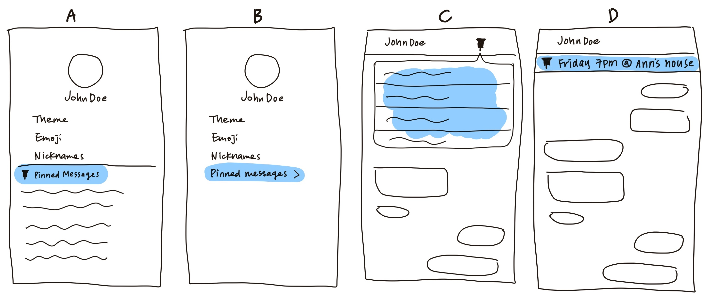

Facebook Messenger
I dive into researching how Facebook Messenger could be improved in terms of its usability and designing the best solution to make this product even more convenient for the users.
Scope
UX Research & Design
Duration
2 Weeks

I dive into researching how Facebook Messenger could be improved in terms of its usability and designing the best solution to make this product even more convenient for the users.
UX Research & Design
2 Weeks
Facebook Messenger is the messaging platform developed by Facebook. This platform is completely seperated from the main Facebook app and has it's own standalone app. As of 2020, Facebook Messenger is in the second place with over 1.3 billion users and Whatsapp in the first place with over 1.6 billion users. (https://en.wikipedia.org/wiki/Messaging_apps/)
Facebook Messenger is the only messaging app I use. Because A) pretty much everyone has a Facebook account, making it very easy to connect and reach out to people without having to manually add contacts. B) I'm able to scroll through my Facebook feed and share links and events with my friends.
The problem that sparked my interest in this project is that I constantly catch myself scrolling through endless messages in a chat, trying to find the one specific message. I often see people around me struggling with this issue as well.
Facebook Messenger is the only messaging app I use. Because A) pretty much everyone has a Facebook account, making it very easy to reach out to people and not having to manually add contacts. B) I'm able to scroll through my Facebook feed and share links and events with my friends.
I interviewed and observed 5 participants. Research Goals: uncover how users feel about FB Messenger, their behaviors and habits, and other struggles they have when navigating through this app that contributes to the general problem of problematic usability.
1. Finding a specific message takes a lot of effort
All participants face this issue when trying to find a specific message. Most of the times, they would like to find an address, or information on plans made but unable to because it's buried in the midst of all other messages. I followed up by asking why they wouldn't use the "search in conversation" feature to perform this task. Most reported saying they sometimes forget that this function exists and that occasionally, they can't recall the exact word of phrase of the message, therefore unable to find using this feature.
2. Often forget to reply to a chat
3. Forget if a group chat already exists, end up creating a duplicate
How might we help the users get what they want faster?
How might we make the experience smoother and more logical?
How can the pinned messages entry point be displayed for easy access and not increase cognitive load? How many steps should the users take to get to the entry point?
Design A: isn't the best solution because 1) it's not easily accessable, 2) displaying all pinned messages in the chat setting feels unorganized because content of different categories are displayed on the same information hierarchy.
Design B: users take 2 steps to access the archive. This makes the message feel more of high importance, like notes, instead of just marking them as important. This would trigger users to pin as many messages as they want since there's even a separate archive or them and don't suggest casualness or instantness.
Design C: best solution. Messages are hidden initially and are shown when the icon is clicked on, provides instant access, a popup-like block would allow the users to think twice before pinning a message for a curated selection of messages.
Design D: makes pinned messages feel more casual and instant but takes up more cognitive load than necessary. Some messages don't have to be displayed and seen by users at all times, they just need to be easily accessable when needed.
What actions should the user take in order to pin a mesage? How can the pinned messages stand out without getting in the way of current chatroom designs? How should the relationship between pinned messages and entry point be shown?
I conducted usability testing to see which design best solves the problem.

Design A: users press and hold the message that they wish to pin, and select the pin icon option. I decided that this is the best solution because it requires the appropriate amount of steps for users to complete this goal.
Design B: users would press and hold the message, select more, and select the option to pin. This isn't the best solution because it's too complex and requires much effort in relation to the significance of the goal that's accomplished.
Design C: users swipe the message to pin. This isn't the best solution either because users could easily get confused with what they would get when they swipe in each direction (reply vs pin), especially when users swipe to different sides when they reply to their own message and the other person's.
How would the priority chats be indicated while complying to Facebook's design and theme? How would the indicators relate to the action it takes to prioritize it (relationship between trigger, interaction, and indicator)?